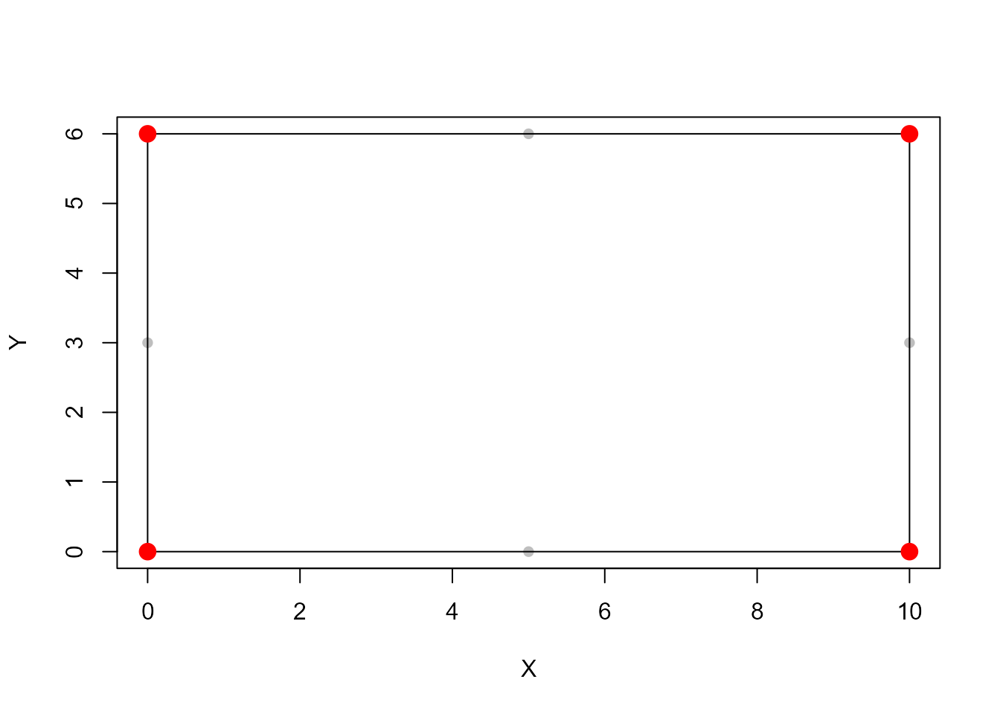

Identifies the four corner vertices of an approximately rectangular boundary using its convex hull and Euclidean distances.
Value
Named integer vector containing the row indices of the four detected
corners in boundaryXY: A (bottom-left), B (bottom-right),
C (top-right), and D (top-left).
Details
The convex hull of the boundary is computed using grDevices::chull().
Four reference corners are defined from the minimum and maximum X and Y
coordinates. For each reference corner, the closest convex hull vertex
is selected using Euclidean distance.
The method assumes that the rectangular boundary is approximately aligned with the X and Y axes. Results may be affected by noise, outliers, or rotation of the geometry.
Examples
# Define the boundary coordinates of a rectangle
boundaryXY <- rbind(
c(0, 0), c(5, 0), c(10, 0),
c(10, 3), c(10, 6),
c(5, 6), c(0, 6), c(0, 3)
)
# Identify the four corner vertices
iCorner <- detectCorners(boundaryXY)
# Extract the corner coordinates
corners <- boundaryXY[iCorner, ]
# Plot the boundary and the detected corners
plot(boundaryXY, pch = 16, col = "grey", xlab = "X", ylab = "Y")
polygon(boundaryXY, border = "black")
points(corners, pch = 19, col = "red", cex = 1.5)
